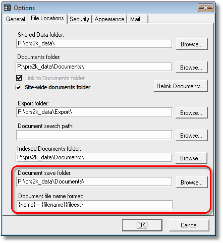
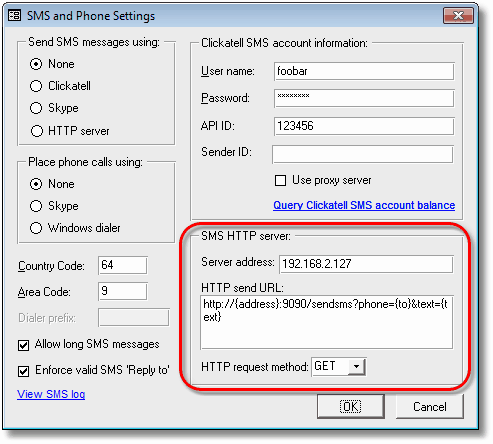

We’ve just released PRS 8.1.1. This is a recommended upgrade, especially if you are using Microsoft Office 2013 as it fixes an Outlook 2013 incompatibility. To download and upgrade go to the Installing the Latest PRS Client section on our Updates web page and follow the instructions. What’s New in PRS 8.1.1Linked documents path and file name customisationin version 8.1.1

When you save a linked document or email attachment the PRS prompts you to save it in the shared documents folder, if you always save to a particular sub-folder you are left with extra mouse clicks to get there. The new Document save folder option eliminates this inconvenience by allowing you to specify your own default document save folder. The PRS’s file naming convention for saved documents doesn’t suit everyone so we’ve introduced the new Document file name format option which allows you to specify the file naming convention for linked document files that best suits your company. New delivery option for SMS messagesin version 8.1.1 Ever wished you could send SMS messages from the PRS via your own phone? Our new HTTP SMS delivery option can be configured to work with many and smartphone (and Cloud-based) HTTP gateways — all you need to do is enter the correct server parameters for your chosen gateway in the PRS SMS Texting and Phone Calls dialog.

A smartphone based SMS gateway is an application that runs on your smartphone and accepts SMS messages sent wirelessly from your PC. Cloud-based SMS gateways are hosted on the Internet. The new HTTP server delivery option caters for both. Here is an example of each type: Example smartphone SMS GatewayThis SMS Gateway app installs a personal SMS gateway server on your Android phone. The PRS sends SMS messages to your phone over the Wireless network, your phone then delivers the SMS message just as if you had entered it manually. After you have installed and configured the SMS Gateway app on your phone enter these SMS HTTP server parameters from the PRS Tools→Setup→SMS Texting and Phone Calls menu command:
Example Cloud-based SMS GatewayClickatell’s Cloud-based HTTP SMS Gateway API accepts HTTP requests to send SMS messages. You need a Clickatell API account.
This example is for illustrative purposes — you would be better off using the PRS’s dedicated Clickatell delivery option as it has message tracking features. Tips and TricksText too small?High resolution displays on laptops can render the text too small to be read comfortably. Here are some techniques to increase the screen text size:
Contingency planning with Offline AccessThe PRS Offline Access feature allows PRS Client PCs to use a local copy of the shared database when they are not connected to the network. This is normally used to allow laptops to access PRS data when they are taken out of the office but it can also be used as a contingency backup for desktop PCs in the event of an office server or network outage — users will be able to access the local offline data until the outage is fixed. Need help?Our Support web page explains how to get answers to PRS questions and includes links to articles on Maintaining Database Reliability and Performance and PRS Best Practice Deployment. For a full list of the changes since the previous release see the PRS Changelog web page.
|